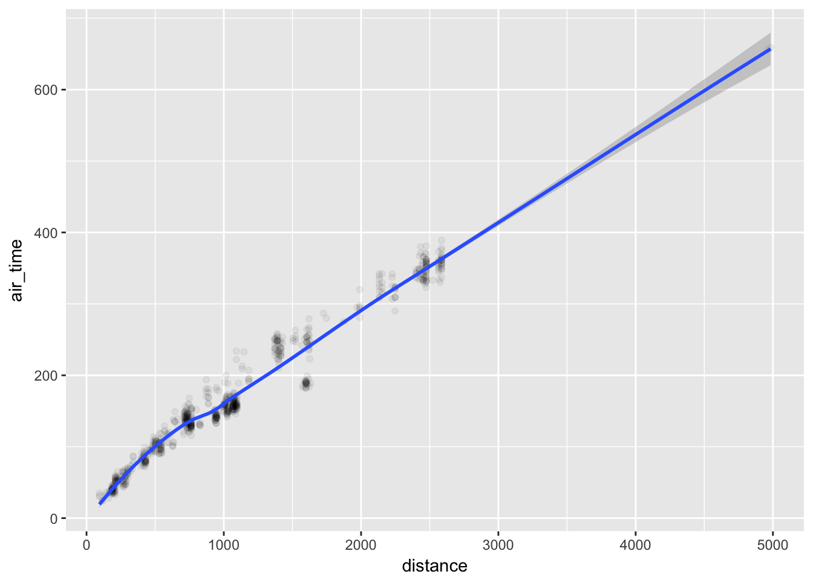

1.3 Huning down numbers
This section is optional but contains more examples of dplyr and ggplot2 functions.
Previously, we find that the congestion at the airports is unlikely the cause of delays. Then, what else may explain the patterns of delays? Are the airlines partly responsible? Recall that earlier we observe that some airlines have longer delays than others for NYC-MSP flights. Let’s take a look at the overall average delays by carrier.
stat_carrier <- flights %>%
group_by(carrier) %>%
summarise(n_obs = n(),
dep_delay = mean(dep_delay, na.rm = TRUE),
arr_delay = mean(arr_delay, na.rm = TRUE)
) %>%
left_join(airlines, by="carrier") %>%
arrange(desc(n_obs))
stat_carrier %>% kable(digit=2)| carrier | n_obs | dep_delay | arr_delay | name |
|---|---|---|---|---|
| UA | 58665 | 12.11 | 3.56 | United Air Lines Inc. |
| B6 | 54635 | 13.02 | 9.46 | JetBlue Airways |
| EV | 54173 | 19.96 | 15.80 | ExpressJet Airlines Inc. |
| DL | 48110 | 9.26 | 1.64 | Delta Air Lines Inc. |
| AA | 32729 | 8.59 | 0.36 | American Airlines Inc. |
| MQ | 26397 | 10.55 | 10.77 | Envoy Air |
| US | 20536 | 3.78 | 2.13 | US Airways Inc. |
| 9E | 18460 | 16.73 | 7.38 | Endeavor Air Inc. |
| WN | 12275 | 17.71 | 9.65 | Southwest Airlines Co. |
| VX | 5162 | 12.87 | 1.76 | Virgin America |
| FL | 3260 | 18.73 | 20.12 | AirTran Airways Corporation |
| AS | 714 | 5.80 | -9.93 | Alaska Airlines Inc. |
| F9 | 685 | 20.22 | 21.92 | Frontier Airlines Inc. |
| YV | 601 | 19.00 | 15.56 | Mesa Airlines Inc. |
| HA | 342 | 4.90 | -6.92 | Hawaiian Airlines Inc. |
| OO | 32 | 12.59 | 11.93 | SkyWest Airlines Inc. |
There could be some differences across carriers. However, the simple average of delays across various routes, days, and hours of flights may not be a good measure to compare the carriers. For example, some carriers may serve the routes and hours that tend to have more delays. Also, given that our dataset covers only the flights from New York City, the comparison may not be nationally representative since carriers use different airports around the country for their regional hubs.
For our purposes, let’s compare the average air time among carriers, while accounting for flight’s destination and timing. The differences in air time are not the same as the differences in delays, but they may indicate some efficiency difference among carriers.
Let’s first check how air time relates to flight distance.
flights %>%
filter (month == 1, day == 1, !is.na(air_time)) %>%
ggplot(aes(x = distance, y = air_time)) +
geom_point(alpha = 0.05) +
geom_smooth()## `geom_smooth()` using method = 'loess'
air_time and distance show a general linear relationship. We can better account for this relationship if we calculate the average air time for each flight destination from New York City.
First, we will consider a simple approach to control for such average air time for each destination and compare the variation in air time among carriers. We can do this by fitting a linear regression model with fixed destination effects and comparing the residuals. This resembles the ANOVA for comparing the mean air times among carriers, but the fixed destination effects here difference out the average air time for each destination from the total variation.
# a copy of flights data
flights2 <- flights
# TRUE/FALSE vector showing whther air_time is not NA.
idx0 <- flights %>% with(!is.na(air_time))
flights2$res <- NA # prepare a column of residuals to be defined below
flights2$res[idx0] <- flights2 %>% # replace rows with idx0 = TRUE
filter(!is.na(air_time)) %>%
with(
lm( air_time ~ as.factor(dest))
# lm() estimates a linear model.
# "y ~ x"" is the formula for regressing y on x.
# as.factor() converts "dest" to a factor (categorical) class
# which is used as a set of dummy variables in the regression.
) %>%
residuals() # obtains residuals of the lm() object
stat_res <- flights2 %>%
group_by(carrier) %>%
summarise(
mean_res = mean(res, na.rm = TRUE), # mean residual by carrier
sd_res = sd(res, na.rm = TRUE)
)
left_join(stat_carrier, stat_res, by="carrier") %>% kable(digit=2)| carrier | n_obs | dep_delay | arr_delay | name | mean_res | sd_res |
|---|---|---|---|---|---|---|
| UA | 58665 | 12.11 | 3.56 | United Air Lines Inc. | -0.87 | 14.59 |
| B6 | 54635 | 13.02 | 9.46 | JetBlue Airways | 0.28 | 11.55 |
| EV | 54173 | 19.96 | 15.80 | ExpressJet Airlines Inc. | -0.37 | 8.94 |
| DL | 48110 | 9.26 | 1.64 | Delta Air Lines Inc. | -0.20 | 12.32 |
| AA | 32729 | 8.59 | 0.36 | American Airlines Inc. | 0.68 | 13.86 |
| MQ | 26397 | 10.55 | 10.77 | Envoy Air | 0.45 | 8.87 |
| US | 20536 | 3.78 | 2.13 | US Airways Inc. | -0.42 | 9.43 |
| 9E | 18460 | 16.73 | 7.38 | Endeavor Air Inc. | 0.84 | 8.76 |
| WN | 12275 | 17.71 | 9.65 | Southwest Airlines Co. | 0.16 | 12.55 |
| VX | 5162 | 12.87 | 1.76 | Virgin America | 3.26 | 17.58 |
| FL | 3260 | 18.73 | 20.12 | AirTran Airways Corporation | 1.16 | 8.75 |
| AS | 714 | 5.80 | -9.93 | Alaska Airlines Inc. | -2.13 | 16.17 |
| F9 | 685 | 20.22 | 21.92 | Frontier Airlines Inc. | 3.12 | 15.16 |
| YV | 601 | 19.00 | 15.56 | Mesa Airlines Inc. | -0.05 | 7.06 |
| HA | 342 | 4.90 | -6.92 | Hawaiian Airlines Inc. | 5.64 | 20.69 |
| OO | 32 | 12.59 | 11.93 | SkyWest Airlines Inc. | 1.02 | 7.26 |
The differences in air time across carriers (“mean_res”) somewhat differ from the patterns of differences in the simple averages of delays (“dep_delay” and “arr_delay”). The patterns are different between “dep_delay” and “arr_delay” for that matter.
To some extent, it appears to make sense that the average air time is longer for low-cost carriers such as Virgin America, Frontier Airlines, and Hawaiian Airlines. The differences across other carriers, on the other hand, are small, compared to the standard deviations. To get a sense of whether these differences have any statistical significance, let’s use t-test to compare the mean residual between United Airlines and American Airlines.
# t-test comparing UA vs AA for the mean air time
flights2 %>%
with({
idx_UA <- carrier == "UA"
idx_AA <- carrier == "AA"
t.test(res[idx_UA], res[idx_AA])
})##
## Welch Two Sample t-test
##
## data: res[idx_UA] and res[idx_AA]
## t = -15.722, df = 68826, p-value < 2.2e-16
## alternative hypothesis: true difference in means is not equal to 0
## 95 percent confidence interval:
## -1.741133 -1.355142
## sample estimates:
## mean of x mean of y
## -0.8689523 0.6791852With a large number of observations, a seemingly small difference in the means often turns out to be a statistically significant difference. Nonetheless, statistical significance is not sufficient for being an empirically significant difference that matters in the real world. The average difference of about 1.5 minute air time per flight appears very small.
In fact, we can do this sort of pair-wise comparison all at once using a regression. Using carrier fixed effects in addition to destination fixed effects, we can directly compare the mean effects across carriers. We will set United Airlines to be a reference of the carrier fixed effects, so that the fixed effect for United Airlines is set to zero (i.e., omitted category), from which the fixed effects of all other airlines are estimated.
flights2$carrier <- relevel(factor(flights2$carrier), ref="UA")
# reference level is United Airlines
flights2$carrier %>% table()## .
## UA 9E AA AS B6 DL EV F9 FL HA MQ OO
## 58665 18460 32729 714 54635 48110 54173 685 3260 342 26397 32
## US VX WN YV
## 20536 5162 12275 601flights2 %>%
with({
n_carrier <- unique(carrier) %>% length()
n_dest <- unique(dest) %>% length()
print(paste('There are', n_carrier, 'distinct carriers and',
n_dest,'distinct destinations in the data.' ))
})## [1] "There are 16 distinct carriers and 105 distinct destinations in the data."With 16 carriers and 105 destinations minus 2 reference levels for carriers and destinations, the total of 119 coefficients will be estimated for the fixed effects.
f1 <- flights2 %>%
with(
lm( air_time ~ as.factor(carrier) + as.factor(dest) )
# fixed effects for carriers and destinations
)
tidy(f1)[1:20,] # show the first 20 coefficients## term estimate std.error statistic p.value
## 1 (Intercept) 247.9884874 0.75069658 330.3445016 0.000000e+00
## 2 as.factor(carrier)9E 1.8015498 0.12723996 14.1586788 1.702649e-45
## 3 as.factor(carrier)AA 1.9326712 0.09731105 19.8607572 1.002388e-87
## 4 as.factor(carrier)AS -1.9071536 0.49596319 -3.8453531 1.204017e-04
## 5 as.factor(carrier)B6 1.1808039 0.08495098 13.8998267 6.535025e-44
## 6 as.factor(carrier)DL 0.7531812 0.08722600 8.6348244 5.907432e-18
## 7 as.factor(carrier)EV 0.4174574 0.11044837 3.7796605 1.570702e-04
## 8 as.factor(carrier)F9 3.8891981 0.48090201 8.0872985 6.120836e-16
## 9 as.factor(carrier)FL 2.6434074 0.27600661 9.5773336 1.002386e-21
## 10 as.factor(carrier)HA 11.0125104 0.89821710 12.2604106 1.503557e-34
## 11 as.factor(carrier)MQ 1.4592669 0.11892133 12.2708590 1.321669e-34
## 12 as.factor(carrier)OO 1.8091432 2.21222472 0.8177936 4.134757e-01
## 13 as.factor(carrier)US 0.1319337 0.13826299 0.9542230 3.399715e-01
## 14 as.factor(carrier)VX 4.5298528 0.18441295 24.5636378 4.086448e-133
## 15 as.factor(carrier)WN 1.2226161 0.17520980 6.9780125 2.999500e-12
## 16 as.factor(carrier)YV 0.5167461 0.52737831 0.9798395 3.271661e-01
## 17 as.factor(dest)ACK -207.1011095 1.04478912 -198.2228803 0.000000e+00
## 18 as.factor(dest)ALB -216.6188634 0.95130943 -227.7059972 0.000000e+00
## 19 as.factor(dest)ANC 165.1365126 4.26930687 38.6799351 0.000000e+00
## 20 as.factor(dest)ATL -136.1282095 0.75641976 -179.9638460 0.000000e+00# a function to clean up the coefficient table above
clean_lm_rlt <- function(f) {
# keep only rows for which column "term" contains "carrier" e.g., rows 2 to 16 above
rlt <- tidy(f) %>% filter(grepl("carrier",term))
# create column named carrier
rlt <- rlt %>% mutate(carrier = gsub('as.factor\\(carrier\\)','', term))
# drop column term
rlt <- rlt %>% select(-term)
# add columns of carrier, name, and n_obs from the stat_carrier data frame
stat_carrier %>%
select(carrier, name, n_obs) %>%
left_join(rlt, by="carrier")
}
lm_rlt1 <- clean_lm_rlt(f1)
lm_rlt1 %>% kable(digit=2)| carrier | name | n_obs | estimate | std.error | statistic | p.value |
|---|---|---|---|---|---|---|
| UA | United Air Lines Inc. | 58665 | NA | NA | NA | NA |
| B6 | JetBlue Airways | 54635 | 1.18 | 0.08 | 13.90 | 0.00 |
| EV | ExpressJet Airlines Inc. | 54173 | 0.42 | 0.11 | 3.78 | 0.00 |
| DL | Delta Air Lines Inc. | 48110 | 0.75 | 0.09 | 8.63 | 0.00 |
| AA | American Airlines Inc. | 32729 | 1.93 | 0.10 | 19.86 | 0.00 |
| MQ | Envoy Air | 26397 | 1.46 | 0.12 | 12.27 | 0.00 |
| US | US Airways Inc. | 20536 | 0.13 | 0.14 | 0.95 | 0.34 |
| 9E | Endeavor Air Inc. | 18460 | 1.80 | 0.13 | 14.16 | 0.00 |
| WN | Southwest Airlines Co. | 12275 | 1.22 | 0.18 | 6.98 | 0.00 |
| VX | Virgin America | 5162 | 4.53 | 0.18 | 24.56 | 0.00 |
| FL | AirTran Airways Corporation | 3260 | 2.64 | 0.28 | 9.58 | 0.00 |
| AS | Alaska Airlines Inc. | 714 | -1.91 | 0.50 | -3.85 | 0.00 |
| F9 | Frontier Airlines Inc. | 685 | 3.89 | 0.48 | 8.09 | 0.00 |
| YV | Mesa Airlines Inc. | 601 | 0.52 | 0.53 | 0.98 | 0.33 |
| HA | Hawaiian Airlines Inc. | 342 | 11.01 | 0.90 | 12.26 | 0.00 |
| OO | SkyWest Airlines Inc. | 32 | 1.81 | 2.21 | 0.82 | 0.41 |
The “estimate” column shows the mean difference in air time with United Airlines, accounting for the flight destination. The estimate tends to be more precise (i.e., smaller standard errors) for carriers with a larger number of observations. This time, we find that Virgin America, Air Tran, Frontier Airlines, and Hawaiian Airlines tend to show particularly longer air times than United Airlines.
Next, let’s take a step further to account for flight timing as well. We can do this by adding fixed effects for flight dates and hours.
flights2 <- flights2 %>%
mutate( date_id = month*100 + day )
flights2$date_id %>% unique() %>% length()## [1] 365f2 <- flights2 %>%
with(
lm( air_time ~ as.factor(carrier) + as.factor(dest) +
+ as.factor(date_id) + as.factor(hour) )
)
lm_rlt2 <- clean_lm_rlt(f2)
lm_rlt2 %>% kable(digit=2)| carrier | name | n_obs | estimate | std.error | statistic | p.value |
|---|---|---|---|---|---|---|
| UA | United Air Lines Inc. | 58665 | NA | NA | NA | NA |
| B6 | JetBlue Airways | 54635 | 1.60 | 0.07 | 22.50 | 0.00 |
| EV | ExpressJet Airlines Inc. | 54173 | 0.61 | 0.09 | 6.67 | 0.00 |
| DL | Delta Air Lines Inc. | 48110 | 0.95 | 0.07 | 13.03 | 0.00 |
| AA | American Airlines Inc. | 32729 | 1.84 | 0.08 | 22.81 | 0.00 |
| MQ | Envoy Air | 26397 | 1.45 | 0.10 | 14.70 | 0.00 |
| US | US Airways Inc. | 20536 | 0.17 | 0.11 | 1.51 | 0.13 |
| 9E | Endeavor Air Inc. | 18460 | 1.57 | 0.11 | 14.72 | 0.00 |
| WN | Southwest Airlines Co. | 12275 | 1.14 | 0.15 | 7.82 | 0.00 |
| VX | Virgin America | 5162 | 4.85 | 0.15 | 31.57 | 0.00 |
| FL | AirTran Airways Corporation | 3260 | 2.19 | 0.23 | 9.58 | 0.00 |
| AS | Alaska Airlines Inc. | 714 | -2.55 | 0.41 | -6.21 | 0.00 |
| F9 | Frontier Airlines Inc. | 685 | 3.31 | 0.40 | 8.29 | 0.00 |
| YV | Mesa Airlines Inc. | 601 | 0.32 | 0.44 | 0.73 | 0.46 |
| HA | Hawaiian Airlines Inc. | 342 | 11.79 | 0.75 | 15.80 | 0.00 |
| OO | SkyWest Airlines Inc. | 32 | 7.63 | 1.83 | 4.17 | 0.00 |
lm_rlt2 %>% filter(carrier!='UA') %>%
ggplot(aes(x = carrier, y = estimate)) + geom_col() +
labs(title = "Mean Air Time Compared to United Airlines")The results are similar to the previous linear mode except that this time SkyWest Airlines shows much longer air time.
Before wrapping up, our final model is a check for the robustness of the above results. We would like to replace the date and hour fixed effects in the previous model with date-hour fixed effects (i.e., the interaction between date and hour). We could add such fixed effects using time_hour variable defined above. However, that would mean adding nearly 7,000 dummy variables to our linear regression, which is computationally too intensive.
To work around this issue, we approximate this estimation by pre-processing the dependent variable. Specifically, we calculate the average air time for each combination of time_hour and dest and define a new dependent variable by subtracting this average value from the original air time variable (i.e., the new variable is centered at zero-mean for each combination of time_hour and dest). Then, we estimate a linear model with carrier and destination fixed effects.
## Adding time_hour fixed effects is too computationally intensive
# f1 <- flights %>%
# with(
# lm( air_time ~ as.factor(carrier) + as.factor(dest) + as.factor(time_hour))
# )
unique(flights2$time_hour) %>% length() # 6,936 unique time_hour ## [1] 6936flights2 <- flights2 %>%
group_by(dest, time_hour) %>%
mutate(
air_time_centered = air_time - mean(air_time, na.rm=TRUE)
)
f3 <- flights2 %>%
with(
lm( air_time_centered ~ as.factor(carrier) + as.factor(dest) )
)
lm_rlt3 <- clean_lm_rlt(f3)
lm_rlt3 %>% kable(digit=2) # Note: standard errors, t-stat, and p-val are incorrect| carrier | name | n_obs | estimate | std.error | statistic | p.value |
|---|---|---|---|---|---|---|
| UA | United Air Lines Inc. | 58665 | NA | NA | NA | NA |
| B6 | JetBlue Airways | 54635 | 0.82 | 0.03 | 32.24 | 0.00 |
| EV | ExpressJet Airlines Inc. | 54173 | 0.88 | 0.03 | 26.50 | 0.00 |
| DL | Delta Air Lines Inc. | 48110 | 0.52 | 0.03 | 19.85 | 0.00 |
| AA | American Airlines Inc. | 32729 | 1.20 | 0.03 | 41.06 | 0.00 |
| MQ | Envoy Air | 26397 | 1.00 | 0.04 | 27.84 | 0.00 |
| US | US Airways Inc. | 20536 | -0.09 | 0.04 | -2.21 | 0.03 |
| 9E | Endeavor Air Inc. | 18460 | 1.27 | 0.04 | 33.07 | 0.00 |
| WN | Southwest Airlines Co. | 12275 | 1.30 | 0.05 | 24.70 | 0.00 |
| VX | Virgin America | 5162 | 3.47 | 0.06 | 62.59 | 0.00 |
| FL | AirTran Airways Corporation | 3260 | 1.78 | 0.08 | 21.48 | 0.00 |
| AS | Alaska Airlines Inc. | 714 | -2.86 | 0.15 | -19.15 | 0.00 |
| F9 | Frontier Airlines Inc. | 685 | 1.99 | 0.14 | 13.73 | 0.00 |
| YV | Mesa Airlines Inc. | 601 | 0.78 | 0.16 | 4.89 | 0.00 |
| HA | Hawaiian Airlines Inc. | 342 | 1.34 | 0.27 | 4.96 | 0.00 |
| OO | SkyWest Airlines Inc. | 32 | 3.50 | 0.67 | 5.26 | 0.00 |
lm_rlt3 %>% filter(carrier!='UA') %>%
ggplot(aes(x = carrier, y = estimate)) + geom_col() +
labs(title = "Mean Air Time Compared to United Airlines: Robustness Check")
The point estimates should be approximately close to what we would obtain if we regress air_time on the fixed effects of carrier, dest, and time_hour. However, the standard errors are not correctly displayed in the table because the centered variable has a smaller total variation compared to the original air_time variable. (Correct standard errors can be obtained, for example, through a bootstrapping technique.)
Overall, we see again a tendency that lower-cost carriers like Sky West Airlines, Virgin America, Frontier Airlines, and Air Tran show particularly longer air time than United Airlines. Jet Blue Airways, another low-cost carrier, shows a less obvious difference from United Airlines, possibly suggesting that their operation focused on the East Cost is efficient for the flights departing from New York City. Hawaiian Airlines and Alaskan Airlines appear to be somewhat different from other carriers perhaps because they are more specialized in particular flight times and destinations compared to their rivals. In particular, the flights to Hawaii may have distinct delay patterns that are concentrated on certain date-hours of the peak vacation seasons.